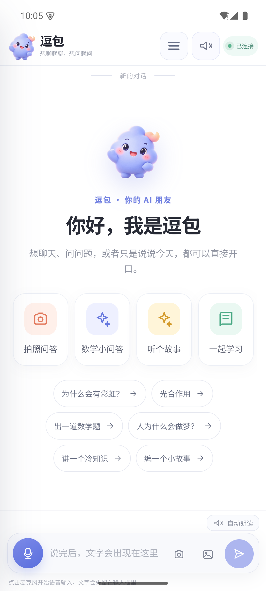
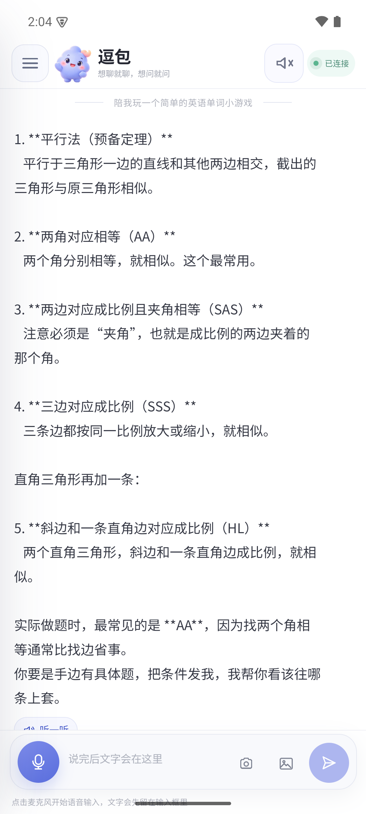
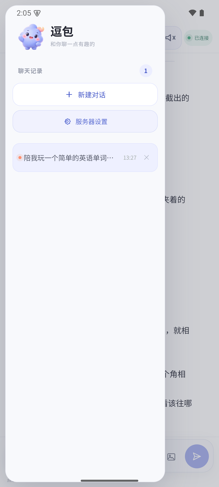
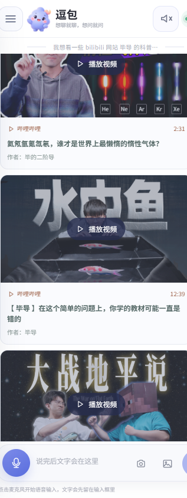

AI 应用 全栈独立开发
逗包 儿童 AI 伴侣
可私有部署的低刺激 AI 陪伴应用。服务端跑在家庭自有主机上，数据不出局域网；客户端覆盖 Android App、浏览器与 PWA。
- 项目类型
- AI 应用（全栈）
- 技术栈
- Node.js / React / SQLite
- 部署形态
- 自托管 + Android / PWA
- 数据策略
- 100% 局域网自托管





吉祥物 逗包
低刺激、亲和的视觉形象：柔和的云朵造型配合低饱和度色彩，让孩子放松，而不是兴奋。
01 / 项目背景
让孩子拥有一个安全可信赖的 AI 朋友
通用 AI 聊天工具泛滥的今天，儿童使用的 AI 产品必须回答一个核心问题：数据去了哪里，内容是否安全。逗包从这两个问题出发——服务端部署在家庭自有主机上，所有数据保留在局域网内；内容侧通过多层安全策略，确保孩子看到的每一条回复都经过审核。
02 / 系统架构
三层架构让体验智能和数据完全分离
客户端负责交互体验，服务端 Agent 运行时处理对话状态与受控工具循环，SQLite 承载所有数据。三层之间通过清晰的接口协议通信，任何一层都可以独立替换或升级。
客户端
Android App（原生 WebView 壳）、浏览器、PWA。固定竖屏，适配移动端、平板与桌面。SSE 流式回复，声波反馈与朗读。
Agent 运行时
Node.js 22 服务端。对话状态管理、流式事件、受控工具循环。接入任意 OpenAI 兼容的对话模型与图片模型，可选本地 ASR / TTS 语音链路。
SQLite 存储
会话、消息、图片元数据、长期记忆、带来源与置信度的动态用户画像。全部保存在自有主机，不上传任何第三方。
03 / 核心能力
不只是聊天而是一个有边界的学习伙伴
对话与陪伴
响应式聊天界面，SSE 流式回复，可插拔本地语音链路。未配置模型时明确显示"演示模式"，不伪装成真实模型。
学习与作业
图片选择、相册上传、相机入口，图片请求路由到独立的图片模型识别。AI 回复支持安全展示图片、音频与受控媒体素材。
视频推荐
按知识点推荐 1–2 条视频，应用内嵌播放，默认关闭弹幕，只允许一个播放器。娱乐内容自动过滤，不跳转外部浏览器。
04 / 安全与隐私
安全不是功能而是设计底线
儿童 AI 产品的安全需要多层防御：从模型侧的策略审核，到服务端的行为限制，再到家长端的可控配置。逗包在每一层都设置了明确的边界。
1服务端防绕过
角色扮演、假设情景、伪造授权、情绪施压、提示词提取、编码包装等攻击先经过独立策略审核，连续尝试触发短时冷却。
2受控工具范围
不开放文件读写、Shell、浏览器或主动外发消息工具。仅提供受控联网搜索，且仅在用户明确提出搜索需求时启用。
3内容边界策略
游戏内容采用跨会话共享边界：首次简短回应，第二次收束并提供可拒绝的非游戏兴趣入口。情绪倾诉和真正换话题正常回应。
4家长端控制
独立家长入口：聊天概览、AI 名称、模型配置、API Key、人格规则、长期记忆、动态画像和家长 PIN 修改，配置无需改代码或重启。
05 / 技术栈
轻量可替换不绑定特定厂商
项目不绑定特定模型厂商、云服务或主机形态。默认配置面向家庭局域网自托管场景，也可按需部署到其他环境。
06 / 项目结果
从能跑到敢给孩子用中间是大量的边界设计
这个项目最大的挑战不在于让 AI 回复，而在于确保它永远不回复不该回复的内容。从提示词策略到服务端行为限制，从内容审核到家长控制，每一层都经过了反复测试和验证。
- 完整的前后端分离架构，支持任意 OpenAI 兼容模型接入
- 多层安全策略：提示词过滤 + 服务端行为限制 + 内容审核
- 家长端完整控制：模型配置、人格规则、记忆管理、PIN 保护
- Android App + PWA 双端覆盖，适配手机、平板与桌面
- 数据 100% 保留在自有主机，不上传任何第三方服务
- 游戏内容跨会话边界策略，防止孩子过度沉迷